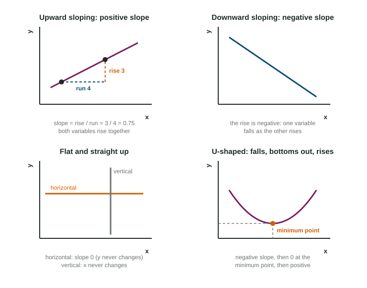

Slopes and Curve Shapes
Slope measures how steeply a line rises or falls: the rise (vertical change) divided by the run (horizontal change).
Part 1 · Hook
Why this matters
Part 2 · Before you start
What this builds on
Part 3 · Prerequisite check
Quick check before you start
1. With quantity across and price up, the ordered pair (40, 5) means
- a quantity of 40 at a price of 5
- a price of 40 at a quantity of 5
- a total of 45
- a quantity of 5 at a price of 40
Show the answer
The first number is the horizontal value, the second the vertical value.
- Correct: a quantity of 40 at a price of 5:
- a price of 40 at a quantity of 5:
- a total of 45:
- a quantity of 5 at a price of 40:
2. Points that fall as you move to the right show
- an inverse relationship
- a direct relationship
- no relationship
- a mistake in the table
Show the answer
One variable rises while the other falls.
- Correct: an inverse relationship:
- a direct relationship:
- no relationship:
- a mistake in the table:
Part 4 · See it
See it first

Part 5 · Step by step
How it works, step by step
- You move between two points on a linethe vertical change is the rise and the horizontal change is the run
- You divide the rise by the runyou get the slope: how much the vertical variable changes for each one-unit change in the horizontal one
- The rise and the run have the same signthe slope is positive and the line rises to the right
- The rise and the run have opposite signsthe slope is negative and the line falls to the right
Part 6 · Key ideas
Key ideas
- Slope = rise over run = (change in the vertical value) divided by (change in the horizontal value). Subtract in the same order on top and bottom.
- Positive slope: the line rises to the right (a direct relationship). Negative slope: it falls to the right (an inverse relationship). A horizontal line has a slope of 0.
- A straight line has the same slope everywhere. A curve has a slope that changes from point to point.
- A U-shaped curve falls, then rises. At its minimum point the slope is 0: the curve stops falling and starts rising.
Part 7 · Misconception
A common mistake
The wrong idea: Slope is the run divided by the rise: the horizontal change over the vertical change.
What actually happens: Slope is the rise over the run: the vertical change divided by the horizontal change. From (20, 8) to (60, 4) the slope is (4 - 8) / (60 - 20) = -0.1, not -10.
Part 8 · Check yourself
Check yourself
Exam-style questions. Anything you miss goes into your review queue.
1. What is the slope of a line?
- The change in the horizontal value divided by the change in the vertical value
- The vertical value at the point where the line starts
- The change in the vertical value divided by the change in the horizontal value
- The sum of the two values at any point on the line
Show the answer
Slope is rise over run: vertical change on top, horizontal change on the bottom.
- The change in the horizontal value divided by the change in the vertical value: That is run over rise, the slope turned upside down.
- The vertical value at the point where the line starts: The starting height says where the line is, not how steep it is.
- Correct: The change in the vertical value divided by the change in the horizontal value: Right: rise over run.
- The sum of the two values at any point on the line: Adding the coordinates of a point does not measure steepness.
2. A straight line passes through (20, 8) and (60, 4). What is its slope?
Type a number. A four-function calculator is allowed, as on the exam.
Show the answer
Rise: . Run: . Slope , negative because the line falls to the right.
- Answer: -0.1
3. What is the slope of a horizontal line?
- 0
- 1
- A negative number
- The height of the line
Show the answer
Along a horizontal line the vertical value never changes, so the rise is 0 and 0 divided by any run is 0.
- Correct: 0: Right: no rise, so the slope is 0.
- 1: A slope of 1 rises one unit for each unit across.
- A negative number: A negative slope falls to the right; a horizontal line does not fall.
- The height of the line: The height says where the line sits, not how steep it is.
4. Line P falls 3 units for every 1 unit across. Line Q falls 1 unit for every 3 units across. Which statement is correct?
- Both slopes are negative, and Q is steeper
- P has a positive slope and Q a negative one
- They have the same slope because both fall
- Both slopes are negative, and P is steeper
Show the answer
P has a slope of -3 and Q a slope of about -0.33. Both fall, and the one with the larger size (3) is steeper.
- Both slopes are negative, and Q is steeper: Q falls only one unit for three across, so it is flatter.
- P has a positive slope and Q a negative one: Both lines fall to the right, so both slopes are negative.
- They have the same slope because both fall: Falling tells you the sign, not the size; -3 and -1/3 differ.
- Correct: Both slopes are negative, and P is steeper: Right: -3 is steeper than -1/3.
Data
A delivery van's fuel use at different speeds
| Speed (miles per hour) | Fuel used (gallons per 100 miles) |
|---|---|
| 20 | 6.0 |
| 30 | 4.6 |
| 40 | 3.8 |
| 50 | 3.4 |
| 60 | 3.6 |
| 70 | 4.4 |
5. At what speed does the van reach the minimum point of its fuel curve?
- 20 miles per hour
- 50 miles per hour
- 70 miles per hour
- 40 miles per hour
Show the answer
Fuel use falls to 3.4 gallons at 50 miles per hour, then rises again. The lowest value marks the minimum point.
- 20 miles per hour: At 20 miles per hour the van uses the most fuel in the table.
- Correct: 50 miles per hour: Right: 3.4 gallons is the lowest value.
- 70 miles per hour: At 70 miles per hour fuel use is rising again.
- 40 miles per hour: At 40 miles per hour fuel use is still falling.
6. Place point X on the downward-sloping curve D at a larger quantity than the point where D meets the upward-sloping curve S.
Work on the graph (it needs JavaScript), then check.
Show the answer
D slopes down, so moving right along it to a larger quantity takes you to a lower price: X goes down and to the right along D.
- Key: see the explanation
Part 9 · Summary
Summary
Part 10 · Up next
What comes next
Part 11 · Connections